Get into groups of 2-3 people and discuss the following questions:
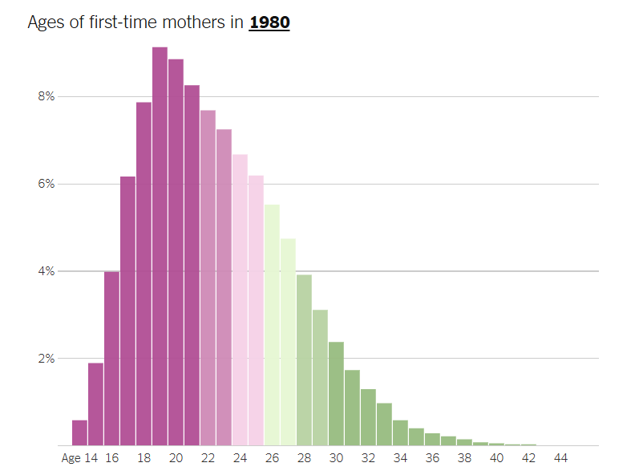
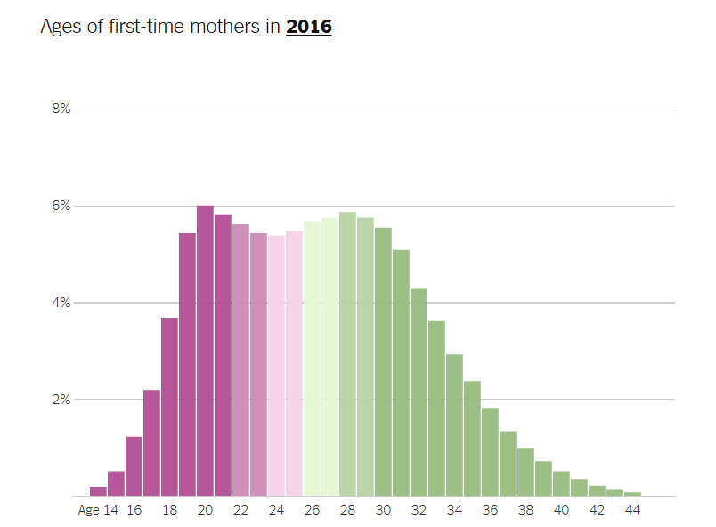
What is something you like about the way this data is portrayed?
What is something you would change in these visualizations?
What data does the percentages on the vertical axis represent?
Classification of Variables
. . .
A variable is a data item that can vary or change, and it can take on different values.
There are two types of scales a variable could be:
Categorical Variable
Quantitative Variable
Categorical
Type of variable that represents categories or groups. It takes one of a limited, usually fixed, number of possible values, assigning each unit of observation to a particular group or nominal category on the basis of some qualitative property.
Examples:
Binary: Only takes two possible values, and are typically represented as 1 or 0.
Nominal: Categories have no clearorder, and are mutually exclusive
Ordinal: Have a clear ordering of the categories
Quantitative
Numerical data point (AKA numerical variable) that can be measured or counted, allowing for mathematical operations to be applied.
Examples:
Discrete: Can take any countable value represented as an integer (whole number),
Continuous: Can take any measurable value within a given range, including fractions and decimals.
Chart Selection
While the grammar of graphics is an excellent tool that lets us specify and construct a visual display of data, it does not tell us what graphic to use.
Right Graph for the Right Analytical Task
Stephen Few: analytical tasks or analytical patterns
Purpose
Example Chart Types
Change over time
Timeline (line chart), area chart, slope chart
Showing part-to-whole
Stacked bar, donut chart, treemap
Comparisons
Bar chart , column chart, dot plot
Distributions (quantitative variable)
Histogram, boxplot, violin plot, density
Ranking
Bar chart (sorted), lollipop chart
Relationships
Scatter plot, bubble chart, connected scatter
Correlations
Scatter plot, matrix chart
Geospatial
Choropleth, symbol map
Flow
Arrow charts, Sankey diagram
Text
Word cloud
Activity 1: Variables and Graphs
. . .
For each graph, identify the type of variables used (i.e. quantitative or categorical), and the analytical task that can be done with such graph.
Lollipop Chart
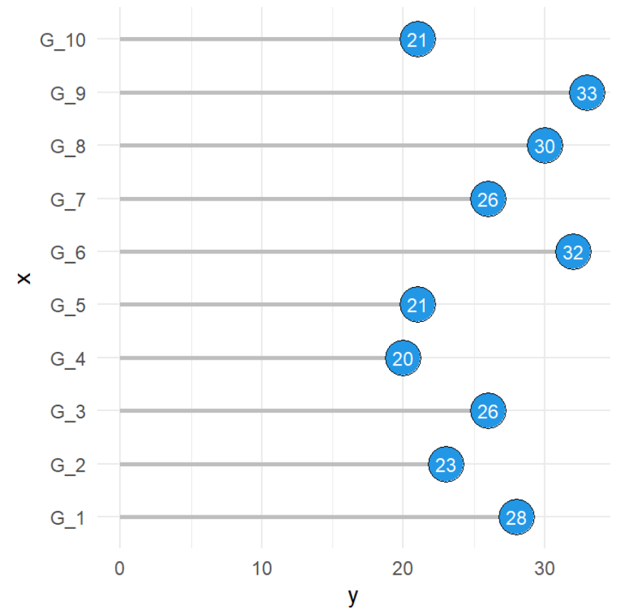
Sorted Bar Chart
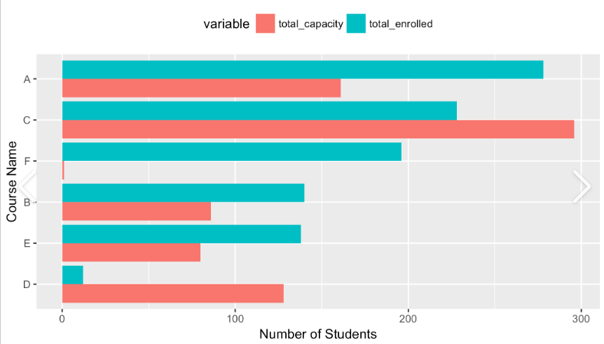
Donut Chart
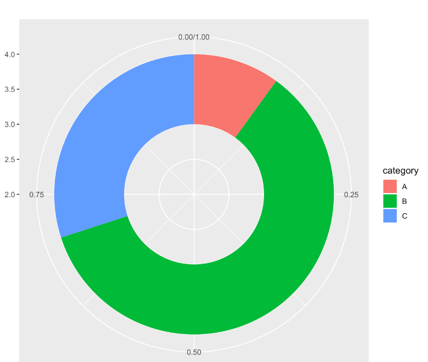
Sankey Diagram
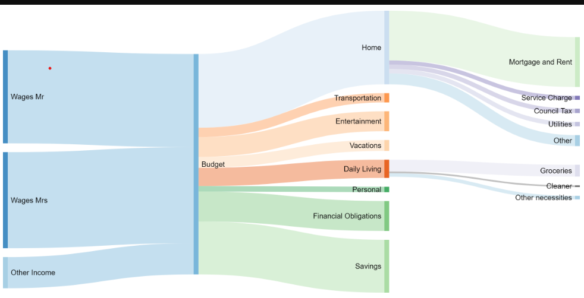
The Grammar of Graphics
“The Grammar of Graphics”
From a conceptual perspective, making graphics involves mapping data to geometric objects and their visual properties.
Why do we need Grammar of Graphics (GG)?
. . .
We believe that the GG is a good starting point that gives us a framework (mental map) and a vocabulary to create graphics.
This grammar allows creation of graphics to be:
consistent
reusable
modular
Formalized by Leland Wilkinson (1999)
A formal set of rules to create any type of graphics
Underlies most modern data visualization software.
Implemented as an R package (‘ggplot2’)
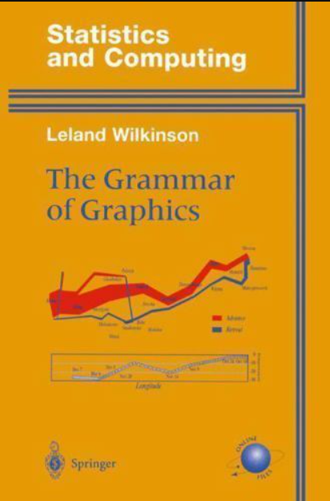
Key Concepts
Data: the data set being visualized (next week!)
Aesthetics (aes): how variables map to visual properties (x, y, color, size, etc)
Geometric objects (geoms): what kind of marks to draw (points, bars, lines)
Facets: creating small multiples by splitting data into panels
Stats: statistical transformations (e.g. binning for histograms, smoothing lines)
Coordinates: how data values are translated into visual values (e.g. color gradients)
Themes: controlling non-data elements (fonts, backgrounds, gridlines)
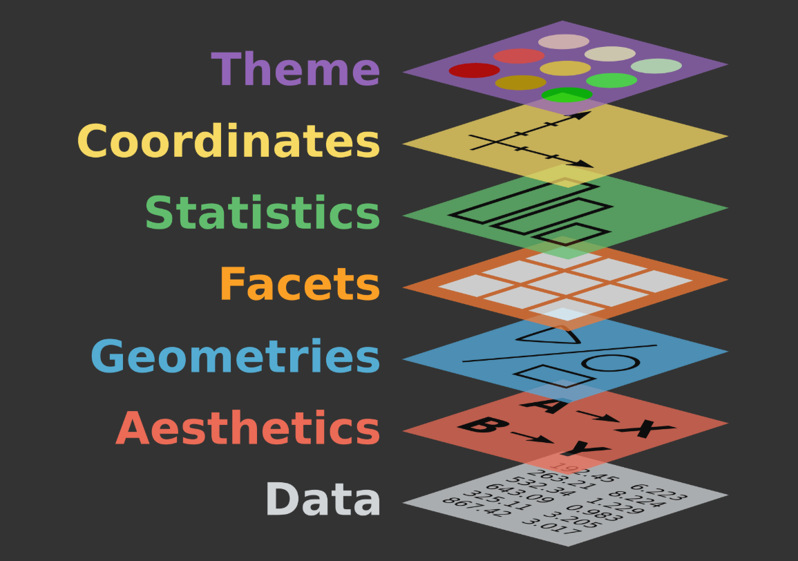
Aesthetic Mapping
. . .
An aesthetic mapping links a variable in the data to a visual channel that can encode its variation.
. . .
Channels for ordered variables
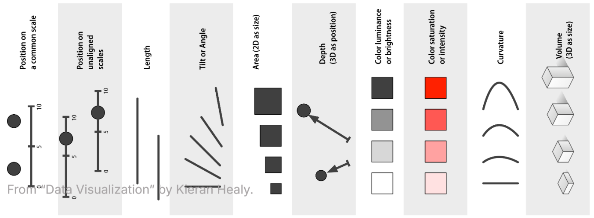
From “Data Visualization” by Kieran Healy.
. . .
Channels for unordered variables
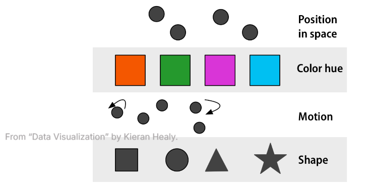
From “Data Visualization” by Kieran Healy.
Geometry
The geometry describes how to translate the observations into marks on the page.
. . .
Examples
Point
Line
Bar
Activity 2: Incorrect or Correct use of GG
. . .
Explain why the following graphs do not implement grammar of graphics correctly.
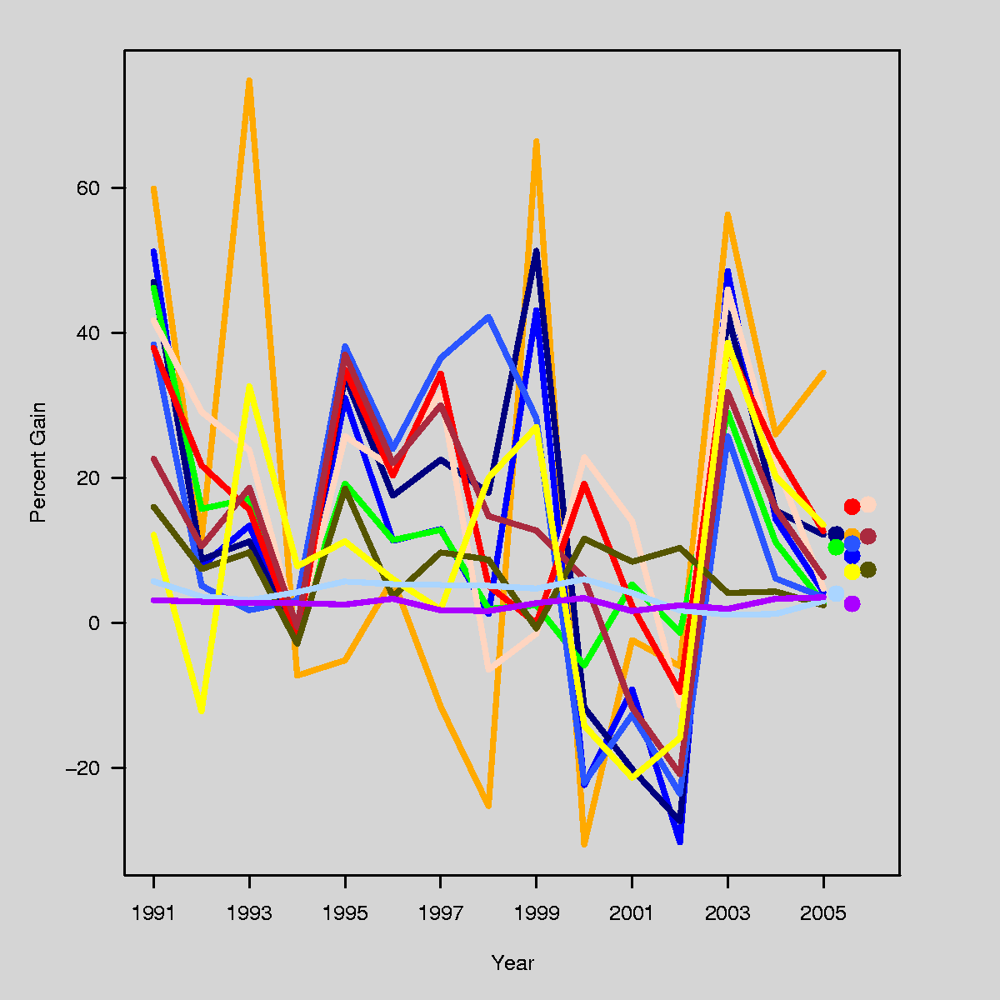
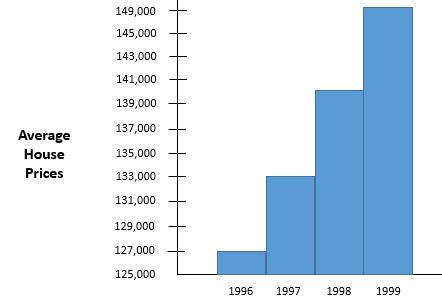
ggplot2
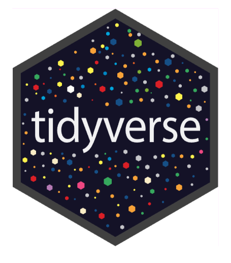
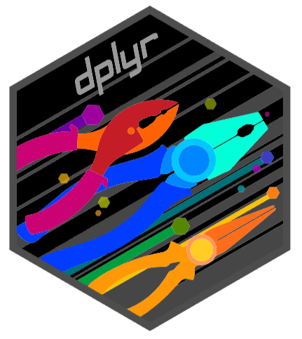
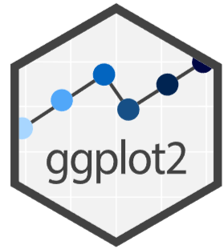
ggplot2()
. . .
A plot can be decomposed into three primary elements:
the data,
the aesthetic mapping of the variables in the data to visual channels, and
the geometry used to translate the observations into marks on the plot.
Code Example
Here’s an example of code and output using ggplot2 in R.
library(ggplot2)
Warning: package 'ggplot2' was built under R version 4.5.1
ggplot(mtcars, aes(x = wt, y = mpg, color =factor(cyl))) +geom_point(size =3) +geom_smooth(method ="lm", se =FALSE) +theme_minimal() +labs(title ="Miles per Gallon vs. Weight",color ="Cylinders" )
`geom_smooth()` using formula = 'y ~ x'
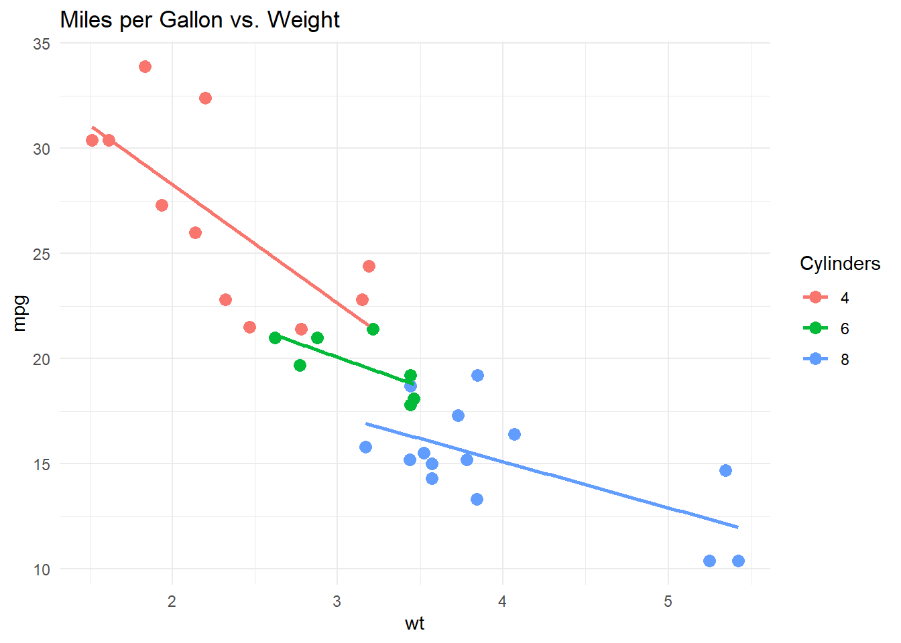
Meet the Palmer Penguins
library(palmerpenguins)
Warning: package 'palmerpenguins' was built under R version 4.5.2
Attaching package: 'palmerpenguins'
The following objects are masked from 'package:datasets':
penguins, penguins_raw
penguins
# A tibble: 344 × 8
species island bill_length_mm bill_depth_mm flipper_length_mm body_mass_g
<fct> <fct> <dbl> <dbl> <int> <int>
1 Adelie Torgersen 39.1 18.7 181 3750
2 Adelie Torgersen 39.5 17.4 186 3800
3 Adelie Torgersen 40.3 18 195 3250
4 Adelie Torgersen NA NA NA NA
5 Adelie Torgersen 36.7 19.3 193 3450
6 Adelie Torgersen 39.3 20.6 190 3650
7 Adelie Torgersen 38.9 17.8 181 3625
8 Adelie Torgersen 39.2 19.6 195 4675
9 Adelie Torgersen 34.1 18.1 193 3475
10 Adelie Torgersen 42 20.2 190 4250
# ℹ 334 more rows
# ℹ 2 more variables: sex <fct>, year <int>
Question: In terms of the way they are constructed…
Warning: package 'tidyverse' was built under R version 4.5.1
Warning: package 'tibble' was built under R version 4.5.1
Warning: package 'tidyr' was built under R version 4.5.1
Warning: package 'readr' was built under R version 4.5.1
Warning: package 'purrr' was built under R version 4.5.1
Warning: package 'dplyr' was built under R version 4.5.1
Warning: package 'stringr' was built under R version 4.5.1
Warning: package 'forcats' was built under R version 4.5.1
Warning: package 'lubridate' was built under R version 4.5.1
── Attaching core tidyverse packages ──────────────────────── tidyverse 2.0.0 ──
✔ dplyr 1.1.4 ✔ readr 2.1.5
✔ forcats 1.0.1 ✔ stringr 1.5.2
✔ lubridate 1.9.4 ✔ tibble 3.3.0
✔ purrr 1.1.0 ✔ tidyr 1.3.1
── Conflicts ────────────────────────────────────────── tidyverse_conflicts() ──
✖ dplyr::filter() masks stats::filter()
✖ dplyr::lag() masks stats::lag()
ℹ Use the conflicted package (<http://conflicted.r-lib.org/>) to force all conflicts to become errors
Warning: package 'patchwork' was built under R version 4.5.2
`stat_bin()` using `bins = 30`. Pick better value `binwidth`.
Warning: Removed 2 rows containing non-finite outside the scale range
(`stat_bin()`).
Warning: Removed 2 rows containing non-finite outside the scale range
(`stat_density()`).
Warning: Removed 2 rows containing non-finite outside the scale range
(`stat_boxplot()`).
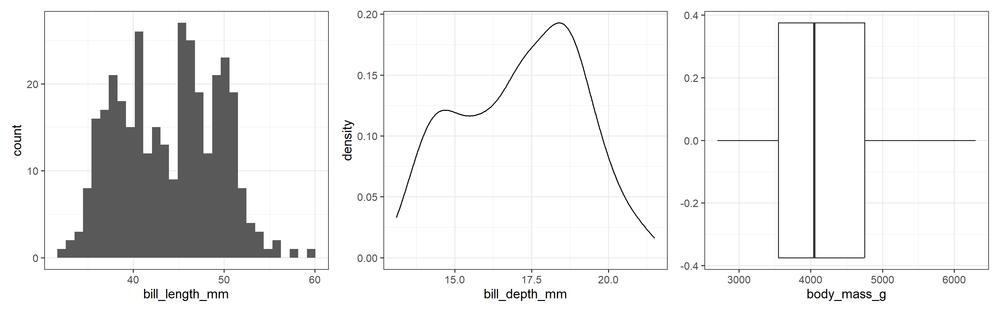
What do these plots have in common? How do they differ?
{{< countdown "1:20" >}}
Question: What do these plots have in common? How do they differ?
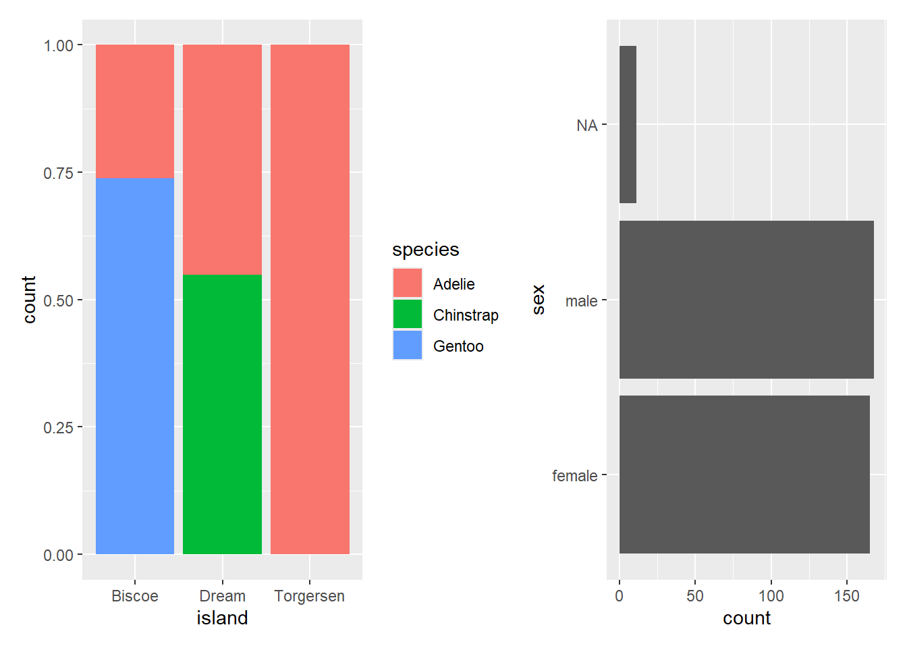
{{< countdown "1:20" >}}
Question: What are the aesthetic mappings and geometries used here?
Warning: Removed 11 rows containing missing values or values outside the scale range
(`geom_point()`).
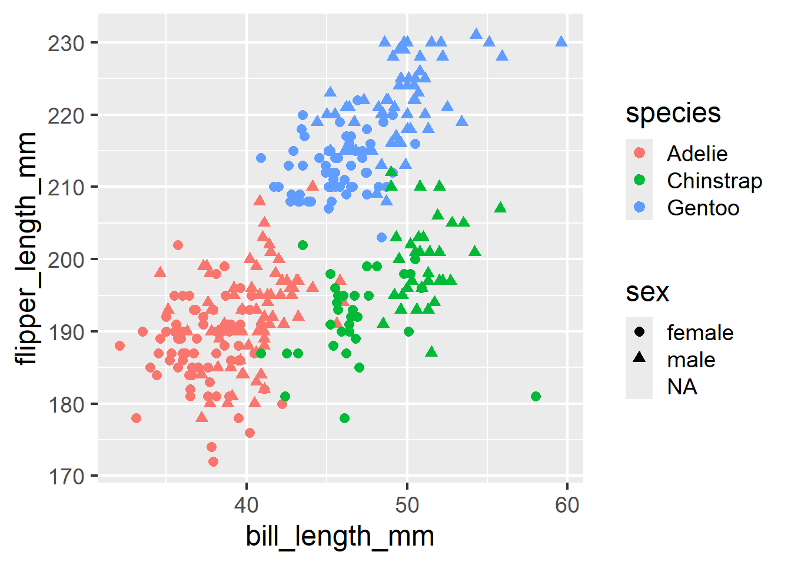
{{< countdown "1:30" >}}
Wrap up
Summary
This is the process of how data is encoded to a visual through the framework that grammar of graphics offers.
Attendance Worksheet
Make sure to turn in your worksheet before leaving with your name on it please!!